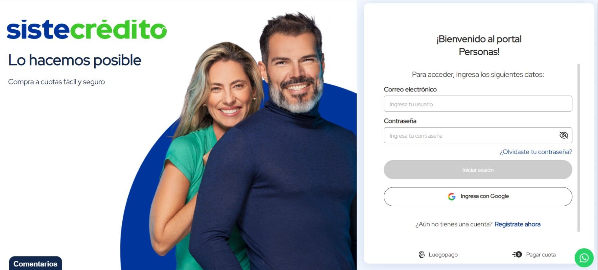

01 Overview
Sistecrédito is a Colombian fintech that offers consumer credit and installment payment solutions to millions of users. The customer portal is where people access all of their services, and the login screen is the very first thing every user sees.
In 2021, the existing login didn't reflect the maturity or warmth of the brand anymore. I was brought in to align that authentication experience with the visual identity Sistecrédito had been building across its campaigns and communications.
02 The Problem
The original login page was basically a functional shell: a white background, a logo, a photo on the left, and a form on the right. None of those elements really talked to each other. The brand photography had no defined focal point or crop logic, and the form panel just floated on a plain white surface with nothing anchoring it visually.
For a financial product, where trust gets built or lost in seconds, that login screen was a missed opportunity. It didn't communicate anything about the brand beyond a logo sitting in the corner.

Original login before the redesign
03 Process
I started by pulling the core brand colors from Sistecrédito's visual identity, the primary blue and the accent green. In Figma, I sketched several layout directions, all trying to answer one question: how do you make a login screen feel like it truly belongs to this brand? The answer was a split layout that commits fully to that idea.
The left half became a brand canvas, anchored by a bold circular crop of their campaign photography over a solid brand blue. The right half stripped back to just the form: two fields, a clear call to action, and a defined path for both external customers and internal collaborators. Once I validated the layout in Figma, I moved to VS Code to build the final version directly in the browser.
04 Solution
The redesigned screen locks the brand into the authentication experience from the first pixel. The dark blue header inside the form card carries the primary brand color into the form itself, so there's a visual thread running from the left panel all the way through to the right. The two user paths are unambiguous now too: external customers fill in their credentials or sign in with Google, and internal collaborators have their own clearly separated access point.
The result is a login screen that communicates security and brand identity before the user even types a single character. Something as routine as a login page ended up becoming an expression of what the product stands for.